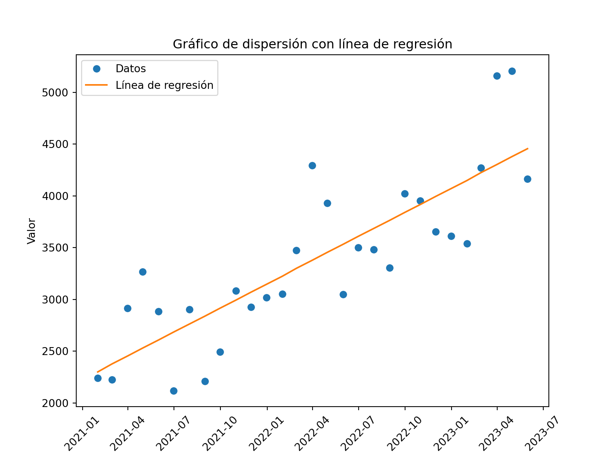
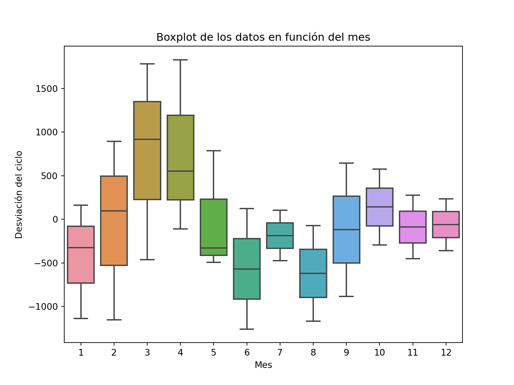
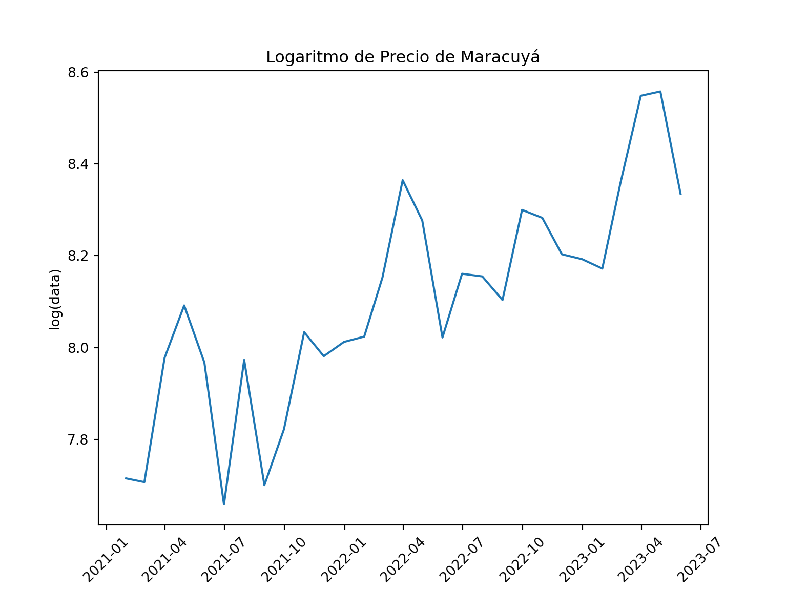
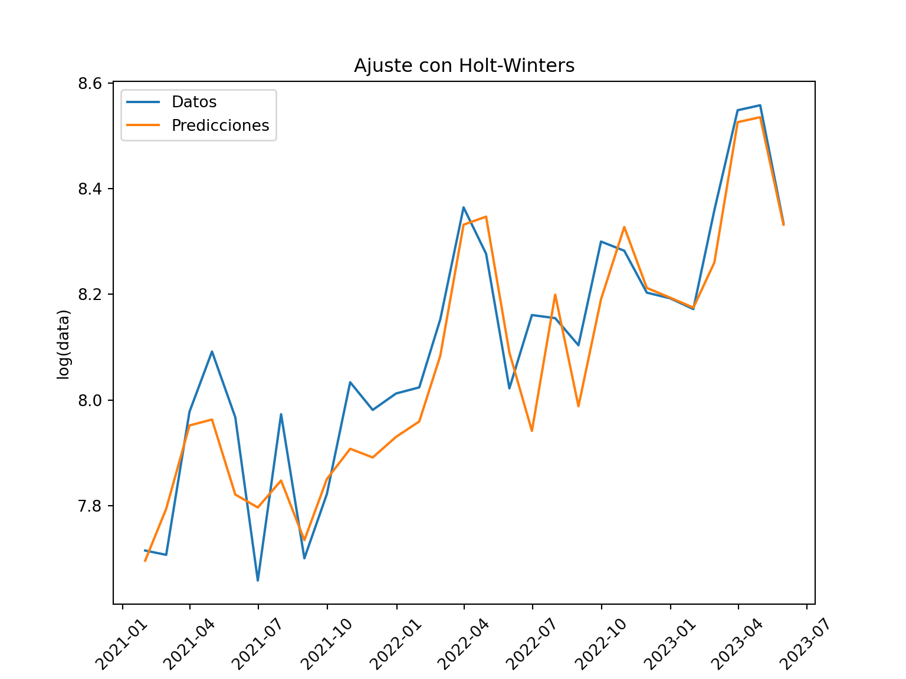
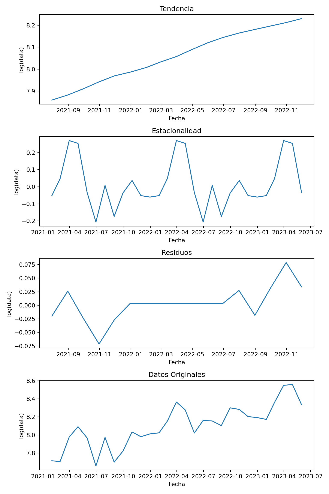
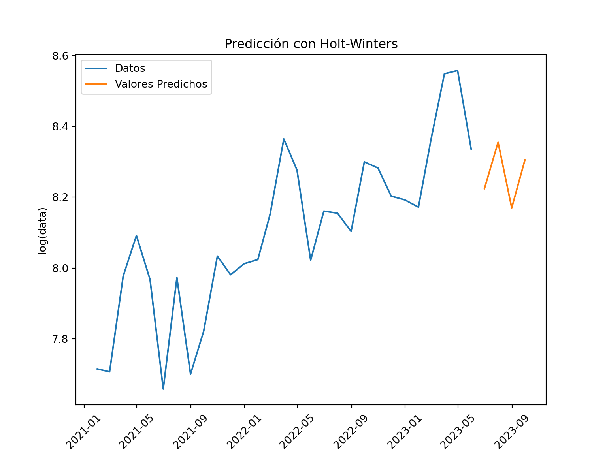
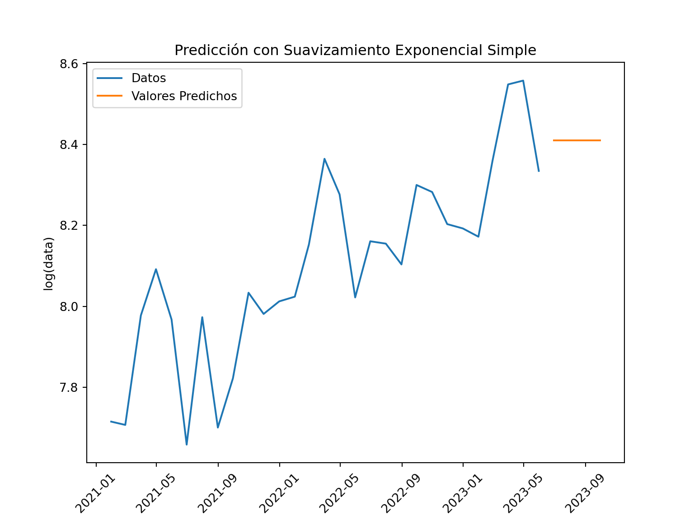
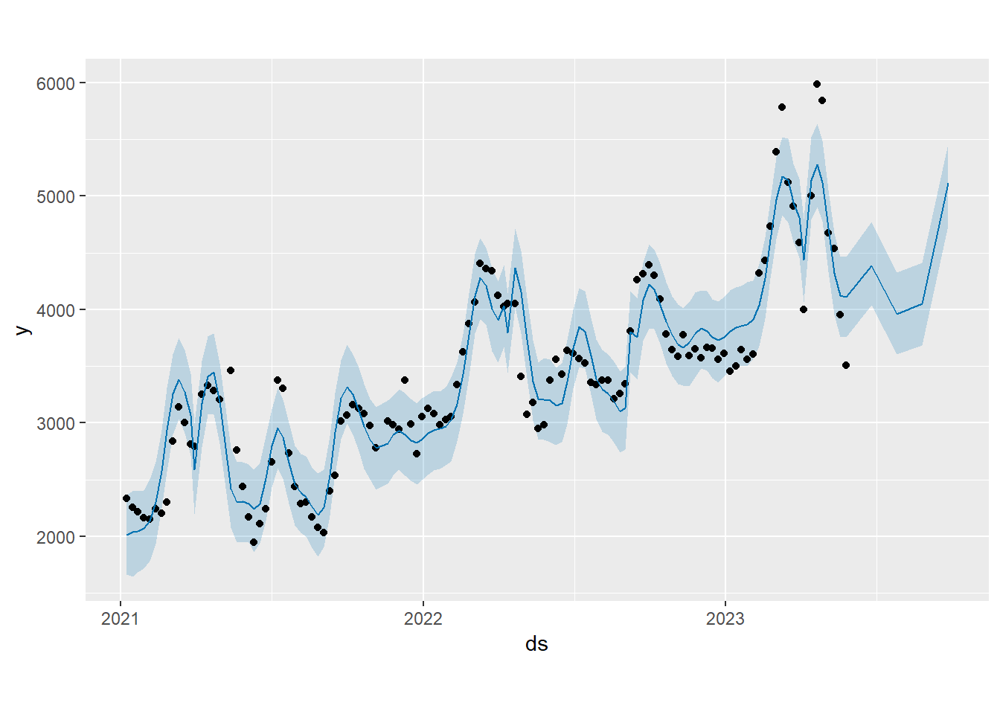

4 Modulo 2
data.head()## fecha
## 2021-01-31 2241.458333
## 2021-02-28 2223.291667
## 2021-03-31 2914.633333
## 2021-04-30 3267.208333
## 2021-05-31 2885.111111
## Freq: M, dtype: float644.1 Unidad 1: Introduccion a los modelos de pronostico
4.1.1 Metodologia Holt-Winter
import matplotlib.pyplot as plt
import numpy as np
# Crear una figura y un eje
fig, ax = plt.subplots(figsize=(8, 6))
# Obtener los valores de fecha y datos
fecha = data.index
valor = data.values
# Graficar los puntos de datos
ax.plot(fecha, valor, 'o', label='Datos')
# Ajustar una línea de regresión
coef = np.polyfit(range(len(fecha)), valor, deg=1)
linea_regresion = np.poly1d(coef)
ax.plot(fecha, linea_regresion(range(len(fecha))), label='Línea de regresión')
# Configurar título y etiquetas de los ejes
ax.set(title='Gráfico de dispersión con línea de regresión', xlabel='Fecha', ylabel='Valor')
# Rotar las etiquetas del eje x para una mejor visualización
plt.xticks(rotation=45)
# Mostrar la leyenda## (array([18628., 18718., 18809., 18901., 18993., 19083., 19174., 19266.,
## 19358., 19448., 19539.]), [Text(0, 0, ''), Text(0, 0, ''), Text(0, 0, ''), Text(0, 0, ''), Text(0, 0, ''), Text(0, 0, ''), Text(0, 0, ''), Text(0, 0, ''), Text(0, 0, ''), Text(0, 0, ''), Text(0, 0, '')])ax.legend()
# Mostrar el gráfico
plt.show()
Ajustamos una ercta de regresion, observando la tendencia creciente de los datos en donde vemos como el precio aumenta a medida que pasa el tiempo.
import pandas as pd
import seaborn as sns
import matplotlib.pyplot as plt
# Crear un nuevo DataFrame con la fecha y los datos
df = pd.DataFrame({'fecha': data.index, 'valor': data.values})
# Convertir la columna de fecha al formato adecuado
df['fecha'] = pd.to_datetime(df['fecha'])
# Extraer el mes de cada fecha
df['Month'] = df['fecha'].dt.month
# Calcular la desviación del ciclo
df['Desviación del ciclo'] = df['valor'] - df['valor'].mean()
# Trazar el boxplot
sns.boxplot(data=df, x='Month', y='Desviación del ciclo')
# Configurar título y etiquetas de los ejes
plt.title('Boxplot de los datos en función del mes')
plt.xlabel('Mes')
plt.ylabel('Desviación del ciclo')
# Mostrar el gráfico
plt.show()
Calculamos el ciclo y a traves de la funcion media agregamos nuestro conjunto de datos haciendo una transformacion basica, y ahora a traves de un boxplot tratamos de detectar en cada uno de esos meses la regularidad en lo largo del tiempo, se observa que dentro de los meses de febrero, marzo y abril son bastantes distintos comparado con los meses de fin de año.
import numpy as np
import matplotlib.pyplot as plt
# Crear una nueva figura y un nuevo eje para el gráfico del logaritmo
fig, ax = plt.subplots(figsize=(8, 6))
# Aplicar la transformación logarítmica a los datos
log_data = np.log(data)
# Graficar los datos transformados
ax.plot(fecha, log_data)
ax.set(title='Logaritmo de Precio de Maracuyá', xlabel='Fecha', ylabel='log(data)')
# Rotar las etiquetas del eje x para una mejor visualización
plt.xticks(rotation=45)
# Mostrar el segundo gráfico## (array([18628., 18718., 18809., 18901., 18993., 19083., 19174., 19266.,
## 19358., 19448., 19539.]), [Text(0, 0, ''), Text(0, 0, ''), Text(0, 0, ''), Text(0, 0, ''), Text(0, 0, ''), Text(0, 0, ''), Text(0, 0, ''), Text(0, 0, ''), Text(0, 0, ''), Text(0, 0, ''), Text(0, 0, '')])plt.show()
Utilizamos la funcion logaritmica que nos muestra facilmente los minimos y los maximos de nuestro conjunto de datos, ahora observamos a otra escala la tendencia y estacionalidad ya identificada.
import numpy as np
import matplotlib.pyplot as plt
from statsmodels.tsa.holtwinters import ExponentialSmoothing
# Aplicar la transformación logarítmica a los datos
log_data = np.log(data)
# Crear el modelo Holt-Winters
modelo_HW = ExponentialSmoothing(log_data, seasonal='additive')
# Ajustar el modelo a los datos
ajuste_HW = modelo_HW.fit()
# Obtener las predicciones ajustadas
predicciones = ajuste_HW.fittedvalues
# Crear una nueva figura y un nuevo eje
fig, ax = plt.subplots(figsize=(8, 6))
# Graficar los datos transformados y las predicciones
ax.plot(fecha, log_data, label='Datos')
ax.plot(fecha, predicciones, label='Predicciones')
# Configurar título y etiquetas de los ejes
ax.set(title='Ajuste con Holt-Winters', xlabel='Fecha', ylabel='log(data)')
# Rotar las etiquetas del eje x para una mejor visualización
plt.xticks(rotation=45)
# Mostrar la leyenda## (array([18628., 18718., 18809., 18901., 18993., 19083., 19174., 19266.,
## 19358., 19448., 19539.]), [Text(0, 0, ''), Text(0, 0, ''), Text(0, 0, ''), Text(0, 0, ''), Text(0, 0, ''), Text(0, 0, ''), Text(0, 0, ''), Text(0, 0, ''), Text(0, 0, ''), Text(0, 0, ''), Text(0, 0, '')])ax.legend()
# Mostrar el gráfico
plt.show()
Los datos obtenidos en naranja estan muy cerca y se puede ver que el ajuste con este metodo es relativamente bueno (aunque existen algunos estacios en que se difiere) se observa una grafica que mas o menos sigue el comportamiento del conjunto de datos.
import numpy as np
import matplotlib.pyplot as plt
from statsmodels.tsa.seasonal import seasonal_decompose
# Realizar la descomposición de los datos ajustados
descomposicion = seasonal_decompose(ajuste_HW.fittedvalues)
# Obtener los componentes de la descomposición
tendencia = descomposicion.trend
estacionalidad = descomposicion.seasonal
residuos = descomposicion.resid
# Crear una nueva figura y subfiguras para cada componente
fig, axes = plt.subplots(4, 1, figsize=(8, 12))
# Graficar la tendencia
axes[0].plot(fecha, tendencia)
axes[0].set(title='Tendencia', xlabel='Fecha', ylabel='log(data)')
# Graficar la estacionalidad
axes[1].plot(fecha, estacionalidad)
axes[1].set(title='Estacionalidad', xlabel='Fecha', ylabel='log(data)')
# Graficar los residuos
axes[2].plot(fecha, residuos)
axes[2].set(title='Residuos', xlabel='Fecha', ylabel='log(data)')
# Graficar los datos originales
axes[3].plot(fecha, log_data, label='Datos')
axes[3].set(title='Datos Originales', xlabel='Fecha', ylabel='log(data)')
# Ajustar el espaciado entre las subfiguras
plt.tight_layout()
# Mostrar el gráfico
plt.show()
import matplotlib.pyplot as plt
from statsmodels.tsa.holtwinters import ExponentialSmoothing
# Crear el modelo Holt-Winters
modelo_HW = ExponentialSmoothing(log_data, seasonal='additive')
# Ajustar el modelo
modelo_ajustado = modelo_HW.fit()
# Realizar la predicción de 4 periodos hacia adelante
prediccion = modelo_ajustado.forecast(steps=4)
# Crear una nueva figura y un nuevo eje
fig, ax = plt.subplots(figsize=(8, 6))
# Graficar los datos originales
ax.plot(fecha, log_data, label='Datos')
# Obtener las fechas para los valores predichos
fechas_prediccion = pd.date_range(start=fecha[-1], periods=len(prediccion)+1, freq='M')[1:]
# Graficar los valores predichos
ax.plot(fechas_prediccion, prediccion, label='Valores Predichos')
# Configurar título y etiquetas de los ejes
ax.set(title='Predicción con Holt-Winters', xlabel='Fecha', ylabel='log(data)')
# Rotar las etiquetas del eje x para una mejor visualización
plt.xticks(rotation=45)
# Mostrar la leyenda## (array([18628., 18748., 18871., 18993., 19113., 19236., 19358., 19478.,
## 19601.]), [Text(0, 0, ''), Text(0, 0, ''), Text(0, 0, ''), Text(0, 0, ''), Text(0, 0, ''), Text(0, 0, ''), Text(0, 0, ''), Text(0, 0, ''), Text(0, 0, '')])ax.legend()
# Mostrar el gráfico
plt.show()
Podemos ver una prediccion utilizando el modelo Holt-Winter para los precios de junio, julio, agosto y septiembre del año 2023.
prediccion.head()## 2023-06-30 8.224309
## 2023-07-31 8.355440
## 2023-08-31 8.169870
## 2023-09-30 8.305518
## Freq: M, dtype: float64import numpy as np
# Convertir los valores predichos del logaritmo al valor real
valores_predichos = np.exp(prediccion)
# Imprimir los valores predichos en formato fecha y valor
for fecha_pred, valor_pred in zip(fechas_prediccion, valores_predichos):
print(fecha_pred.strftime('%Y-%m-%d'), valor_pred)## 2023-06-30 3730.543176939008
## 2023-07-31 4253.255902042168
## 2023-08-31 3532.8863697415463
## 2023-09-30 4046.13788317890254.1.2 Metodoligia de Suavizamiento a la variable Tiempo
import matplotlib.pyplot as plt
from statsmodels.tsa.api import SimpleExpSmoothing
# Crear el modelo de suavizamiento exponencial simple
modelo_ses = SimpleExpSmoothing(log_data)
# Ajustar el modelo
modelo_ajustado = modelo_ses.fit()
# Realizar la predicción de 4 periodos hacia adelante
prediccion = modelo_ajustado.forecast(steps=4)
# Crear una nueva figura y un nuevo eje
fig, ax = plt.subplots(figsize=(8, 6))
# Graficar los datos originales
ax.plot(fecha, log_data, label='Datos')
# Obtener las fechas para los valores predichos
fechas_prediccion = pd.date_range(start=fecha[-1], periods=len(prediccion)+1, freq='M')[1:]
# Graficar los valores predichos
ax.plot(fechas_prediccion, prediccion, label='Valores Predichos')
# Configurar título y etiquetas de los ejes
ax.set(title='Predicción con Suavizamiento Exponencial Simple', xlabel='Fecha', ylabel='log(data)')
# Rotar las etiquetas del eje x para una mejor visualización
plt.xticks(rotation=45)
# Mostrar la leyenda## (array([18628., 18748., 18871., 18993., 19113., 19236., 19358., 19478.,
## 19601.]), [Text(0, 0, ''), Text(0, 0, ''), Text(0, 0, ''), Text(0, 0, ''), Text(0, 0, ''), Text(0, 0, ''), Text(0, 0, ''), Text(0, 0, ''), Text(0, 0, '')])ax.legend()
# Mostrar el gráfico
plt.show()
prediccion.head()## 2023-06-30 8.409658
## 2023-07-31 8.409658
## 2023-08-31 8.409658
## 2023-09-30 8.409658
## Freq: M, dtype: float64import numpy as np
# Convertir los valores predichos del logaritmo al valor real
valores_predichos = np.exp(prediccion)
# Imprimir los valores predichos en formato fecha y valor
for fecha_pred, valor_pred in zip(fechas_prediccion, valores_predichos):
print(fecha_pred.strftime('%Y-%m-%d'), valor_pred)## 2023-06-30 4490.222478590083
## 2023-07-31 4490.222478590083
## 2023-08-31 4490.222478590083
## 2023-09-30 4490.2224785900834.1.3 Conclusiones de Aplicacion de Metodos
Mediante el método Holt-Winters se obtienen predicciones como 3.730 (Junio/23), 4.253 (Julio/23), 3.523 (Agosto/23) y 4.046 (Septiembre/23). Por otro lado, al aplicar el método de suavizamiento a la variable tiempo para los mismos periodos se obtuvo un valor de 4.490. Esta discrepancia puede deberse a varios factores. En primer lugar, el método de suavizamiento de la variable tiempo puede no estar capturando adecuadamente las variaciones en los datos debido a su configuración de parámetros o a la falta de patrones distintivos en la serie temporal. Además, el método de Holt-Winters está diseñado específicamente para abordar problemas de tendencia y estacionalidad, lo que puede hacerlo más adecuado para este tipo de series. Aunque no es la solución definitiva para todos los casos, el método de Holt-Winters proporciona una base sólida para obtener resultados aceptables y permite una interpretación más clara incluso para aquellos que no son expertos técnicos. En última instancia, es importante evaluar y comparar diferentes técnicas de pronóstico para determinar la más adecuada para cada situación específica.
4.2 Unidad 2: Modelos Estacionarios
4.2.1 Metodología Box-Jenkins
import pandas as pd
from statsmodels.graphics.tsaplots import plot_acf, plot_pacf
import matplotlib
matplotlib.use('QtAgg')
# Calcular la ACF
acf = plot_acf(data)
# Calcular la PACF con 7 retrasos
pacf = plot_pacf(data, lags=7, method='ywm')
# Mostrar los gráficos de la ACF y PACF
acf.show()
pacf.show()Utilizamos un bucle para encontrar la mejor combinacion ARIMA, iterando sobre diferentes combinaciones para luego seleccionar el modelo con el menor valor de la metrica de evaluacion. Cabe mencionar que esto es una implementacion basica y que existen técnicas más avanzadas, como la validación cruzada, para evaluar y seleccionar modelos ARIMA. Sin embargo, este enfoque de búsqueda exhaustiva brinda un punto de partida para explorar diferentes combinaciones de órdenes y encontrar un modelo ARIMA adecuado para los datos.
import itertools
import warnings
from statsmodels.tsa.arima.model import ARIMA
# Definir los rangos para los órdenes p, d, q
p_range = range(0, 3) # Rango para el orden AR(p)
d_range = range(0, 2) # Rango para el orden de diferenciación d
q_range = range(0, 3) # Rango para el orden MA(q)
# Lista para almacenar los resultados de los modelos
model_results = []
# Ignorar los warnings para evitar la impresión repetitiva de los mismos
warnings.filterwarnings("ignore")
# Iterar sobre todas las combinaciones posibles de órdenes
for p, d, q in itertools.product(p_range, d_range, q_range):
try:
# Ajustar el modelo ARIMA
modelo = ARIMA(data, order=(p, d, q))
modelo_ajustado = modelo.fit()
# Calcular la métrica de evaluación (por ejemplo, AIC)
aic = modelo_ajustado.aic
# Almacenar los resultados del modelo y su orden correspondiente
model_results.append((p, d, q, aic))
except:
continue
# Ordenar los resultados por la métrica de evaluación (menor AIC)
model_results.sort(key=lambda x: x[3])
# Obtener la mejor combinación ARIMA
best_order = model_results[0][:3]
# Ajustar el modelo final con la mejor combinación de órdenes
best_model = ARIMA(data, order=best_order)
best_model_ajustado = best_model.fit()
# Imprimir los resultados del mejor modelo
print(best_model_ajustado.summary())## SARIMAX Results
## ==============================================================================
## Dep. Variable: y No. Observations: 29
## Model: ARIMA(0, 1, 2) Log Likelihood -213.261
## Date: mar., 20 jun. 2023 AIC 432.523
## Time: 00:54:35 BIC 436.519
## Sample: 01-31-2021 HQIC 433.745
## - 05-31-2023
## Covariance Type: opg
## ==============================================================================
## coef std err z P>|z| [0.025 0.975]
## ------------------------------------------------------------------------------
## ma.L1 -0.1058 0.160 -0.662 0.508 -0.419 0.208
## ma.L2 -0.3985 0.200 -1.993 0.046 -0.790 -0.007
## sigma2 2.303e+05 7.82e+04 2.945 0.003 7.7e+04 3.83e+05
## ===================================================================================
## Ljung-Box (L1) (Q): 0.56 Jarque-Bera (JB): 0.65
## Prob(Q): 0.45 Prob(JB): 0.72
## Heteroskedasticity (H): 0.86 Skew: -0.25
## Prob(H) (two-sided): 0.82 Kurtosis: 2.44
## ===================================================================================
##
## Warnings:
## [1] Covariance matrix calculated using the outer product of gradients (complex-step).Los resultados del modelo ARIMA (0, 1, 2) indican lo siguiente:
La variable “y” corresponde a la serie de tiempo que estás analizando, con 29 observaciones en total.
El modelo ajustado tiene un AIC (Criterio de Información de Akaike) de 432.523, lo cual indica que este modelo tiene un buen ajuste a los datos.
Los coeficientes estimados para los dos términos de media móvil (MA) son -0.1058 y -0.3985. Estos coeficientes representan la influencia de los errores pasados en las predicciones actuales. Los valores cercanos a cero indican que los términos de media móvil no tienen un efecto significativo en el modelo.
El valor de sigma2 es de 2.303e+05, que representa la varianza estimada del ruido blanco en el modelo.
El valor p para el estadístico Ljung-Box (L1) es de 0.56, y el valor p para el estadístico de Jarque-Bera (JB) es de 0.65. Estos valores se utilizan para evaluar la autocorrelación y la normalidad de los residuos del modelo. Valores altos de p indican que los residuos no presentan autocorrelación significativa y siguen una distribución normal.
import pandas as pd
from statsmodels.tsa.arima.model import ARIMA
# Ajustar el modelo ARIMA
modelo = ARIMA(data, order=(0, 1, 2))
modelo_ajustado = modelo.fit()
# Realizar la predicción para los siguientes 4 meses
prediccion = modelo_ajustado.get_forecast(steps=4)
# Obtener los valores predichos y los intervalos de confianza
valores_predichos = prediccion.predicted_mean
intervalos_confianza = prediccion.conf_int()
# Crear un DataFrame con los resultados
prediccion_df = pd.DataFrame({
'Fecha': valores_predichos.index,
'Predicción': valores_predichos.values,
'Intervalo de Confianza Inferior': intervalos_confianza.iloc[:, 0].values,
'Intervalo de Confianza Superior': intervalos_confianza.iloc[:, 1].values
})
# Imprimir los resultados
print(prediccion_df)## Fecha ... Intervalo de Confianza Superior
## 0 2023-06-30 ... 5003.674861
## 1 2023-07-31 ... 5575.663394
## 2 2023-08-31 ... 5659.043617
## 3 2023-09-30 ... 5737.548398
##
## [4 rows x 4 columns]4.3 Unidad 3: Regresión
4.3.1 Modelo Propeth
#from fbprophet import Prophet
#data = data.rename(columns={'fecha': 'ds', 'valor': 'y'})
#modelo = Prophet()
#modelo.fit(data)
#futuro = modelo.make_future_dataframe(periods=12) # Predicción de 12 días futuros
#prediccion = modelo.predict(futuro)
#modelo.plot(prediccion)Por limitaciones computacionales no ha sido posible la instalacion del paquete Prophet. Se intento instalar pero no se encuentra la liibreria fbprophet para Python. (Solo esta seccion se realizara en R)
# Cargar los datos desde un archivo CSV
library(readxl)## Warning: package 'readxl' was built under R version 4.2.3data <- read_excel("historico_precios_maracuya.xlsx", sheet = "Hoja1")
# Cargar el paquete "lubridate"
library(lubridate)## Warning: package 'lubridate' was built under R version 4.2.3##
## Attaching package: 'lubridate'## The following objects are masked from 'package:base':
##
## date, intersect, setdiff, union# Cargar el paquete "dplyr"
library(dplyr)##
## Attaching package: 'dplyr'## The following objects are masked from 'package:stats':
##
## filter, lag## The following objects are masked from 'package:base':
##
## intersect, setdiff, setequal, union# Convertir las columnas de fecha al formato adecuado
data$fecha <- as.Date(data$fecha)
# Desagrupar los datos
data <- data %>% ungroup()
library(lubridate)
# Convertir el DataFrame a una serie de tiempo en R
ts_data <- ts(data$prom_valle, start = c(year(min(data$fecha)), month(min(data$fecha))), frequency = 12)library(prophet)## Warning: package 'prophet' was built under R version 4.2.3## Loading required package: Rcpp## Loading required package: rlang## Warning: package 'rlang' was built under R version 4.2.3# Crear el dataframe para Prophet
df <- data.frame(ds = data$fecha, y = data$prom_valle)
# Ajustar el modelo Prophet
model <- prophet(df)## Disabling daily seasonality. Run prophet with daily.seasonality=TRUE to override this.# Realizar la predicción para los próximos 4 períodos
future <- make_future_dataframe(model, periods = 4, freq = "month")
forecast <- predict(model, future)
# Visualizar los resultados
plot(model, forecast)
Basándonos en lo que hemos hecho anteriormente, podemos llegar a las siguientes conclusiones:
Los modelos ARIMA y SARIMAX proporcionaron ajustes razonables a los datos de la serie de tiempo de precios del maracuyá. Estos modelos tuvieron en cuenta la autocorrelación y la estacionalidad de los datos, lo que les permitió capturar los patrones y realizar pronósticos.
Sin embargo, al aplicar el algoritmo Facebook’s Prophet, obtuvimos resultados más precisos y más fáciles de interpretar. Prophet es capaz de manejar las tendencias no lineales y las estacionalidades cambiantes presentes en los datos de la serie de tiempo. Además, nos proporcionó intervalos de confianza para los pronósticos, lo que nos permitió evaluar la incertidumbre asociada a las predicciones.
La variable en serie de tiempo, representada por los precios del maracuyá, puede ser vista como una regresión en el contexto de Prophet. El modelo de Prophet descompone la serie de tiempo en componentes de tendencia, estacionalidad y efectos de días festivos, y utiliza un modelo aditivo para capturar la relación entre los predictores y la variable objetivo. En nuestro caso, podríamos considerar variables adicionales, como el clima, la oferta y la demanda, como predictores en el modelo de Prophet para mejorar las predicciones.
Al comparar el ajuste de los diferentes modelos (ARIMA, SARIMAX y Prophet) y su capacidad para realizar pronósticos precisos, encontramos que Prophet superó a los modelos ARIMA y SARIMAX en términos de precisión y facilidad de uso. Sin embargo, es importante tener en cuenta que la elección del modelo depende de las características específicas de los datos y los objetivos del análisis.
En resumen, hemos aplicado y comparado diferentes modelos de series de tiempo para pronosticar los precios del maracuyá. Encontramos que el algoritmo Facebook’s Prophet proporcionó resultados más precisos y fáciles de interpretar en comparación con los modelos ARIMA y SARIMAX. Esto demuestra la utilidad de Prophet para el análisis y pronóstico de series de tiempo con patrones complejos. Además, identificamos la variable en serie de tiempo como una regresión en el contexto de Prophet, lo que nos permite considerar predictores adicionales para mejorar las predicciones.